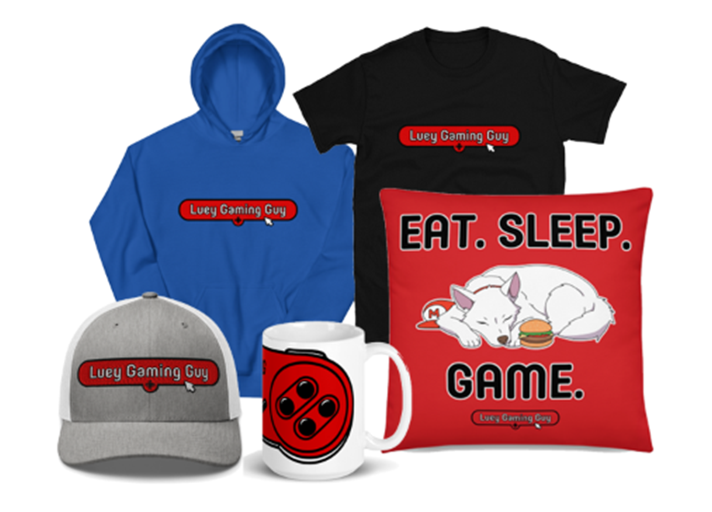

Gaming with Luey
Gaming is at the heart of everything I do. From livestreaming retro games on Twitch to creating content on YouTube, TikTok, and Instagram, I’m always exploring new ways to share the joy of gaming. Whether it’s speedrunning competitions, casual playthroughs, collection showcases, or creative adventures with Shoto, my goal is to connect with gamers everywhere and keep the retro spirit alive.

Twitch Streaming
Twitch is where the action happens live. I stream a wide variety of retro content, from randomizers and speedruns to full playthroughs and community challenges. Some of my favorites include Super Mario 64 speedrunning leagues, Paper Mario randomizer races, and the tough-but-fun Kaizo Ironmon runs. I also take part in tournaments and community events, so there’s always something exciting going on. Whether you’re here to watch epic runs, learn strategies, or just hang out, Twitch is the perfect place to join the fun.
Watch on Twitch
YouTube & TikTok
Outside of streaming, I create content designed to be both entertaining and easy to enjoy on the go. My Luey’s Gaming Gallery shorts highlight pieces from my collection — from classic consoles to quirky accessories — and have become a fan favorite across YouTube Shorts, TikTok, and even Instagram. I also make skits with my husky Shoto, where he goes on game-inspired adventures or rates Pokémon in funny, bite-sized videos. For those who prefer long-form content, I upload personal best runs, randomizer seeds, and other highlights from Twitch so you can catch up anytime.
Watch on YouTube
Watch on TikTok
Follow on Instagram
Community & Social Media
My content doesn’t stop at streaming or videos. I’m active across platforms like Instagram, Bluesky, and X, where I share behind-the-scenes updates, showcase ongoing projects like Game Boy mods, and keep everyone in the loop with the latest store finds. The Discord server is the best place for the community to come together — it’s where gamers can chat, share experiences, and even ask me questions about products I’m working on. It’s more than just a server; it’s a space to hang out, connect, and celebrate the games we love.
Join Discord
Follow on Bluesky
Follow on X / Twitter
Whatnot Live Shows
On Whatnot, I bring my specialty directly to collectors and gamers in real time. These live auctions and streams focus on unique items like custom Game Boys (from the originals to the SP), DS Lites, PSP systems, and even modded home consoles. While I also sell standard games and consoles, Whatnot is where I showcase my modding expertise — IPS screen upgrades, custom shells, and full refurbishments. It’s interactive, fast-paced, and a great way to grab one-of-a-kind pieces while chatting with me live.
Watch on Whatnot
Join the Fun
No matter where you follow, there’s always something new happening. From Twitch streams and YouTube shorts to Whatnot auctions and Discord discussions, I’m excited to share my passion for retro gaming with you. Join me wherever you like to spend your time — gaming is always better when it’s shared.